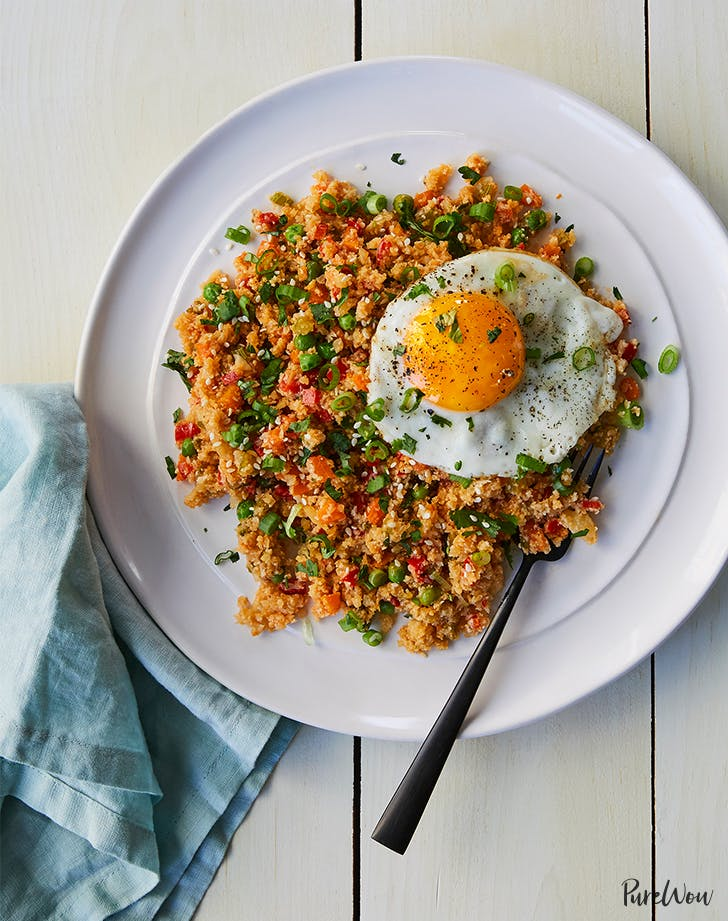

Cauliflower Fried Rice

The best things about takeout: It’s quick, easy and delicious. The worst things: It’s expensive and greasy and you feel gross and bloated afterward. Problem solved. This cauliflower fried rice is super tasty, a breeze to whip up and still really good for you. Win-win-win.
INGREDIENTS
4 servings
FRIED RICE
- 1 head cauliflower, cut into florets
- 2 tablespoons neutral oil (such as vegetable, coconut or peanut)
- 1 bunch scallions, thinly sliced
- 3 garlic cloves, minced
- 1 tablespoon minced fresh ginger
- 2 carrots, peeled and diced
- 2 celery stalks, diced
- 1 red bell pepper, diced
- 1 cup frozen peas
- 2 tablespoons rice vinegar
- 3 tablespoons soy sauce
- 2 teaspoons Sriracha, or more to taste
GARNISHES
- 1 tablespoon neutral oil (such as vegetable, coconut or peanut)
- 4 eggs
- Salt and freshly ground black pepper
- 4 tablespoons chopped fresh cilantro
- 4 tablespoons thinly sliced scallions
- 4 teaspoons sesame seeds
DIRECTIONS
- MAKE THE FRIED RICE: In the bowl of a food processor, pulse the cauliflower until the mixture resembles rice, 2 to 3 minutes. Set aside.
- In a large skillet, heat the oil over medium heat. Add the scallions, garlic and ginger, and stir-fry until fragrant, about 1 minute.
- Add the carrots, celery and red bell pepper, and stir-fry until the vegetables are tender, 9 to 11 minutes.
- Add the cauliflower rice and stir-fry until it begins to turn golden, 3 to 5 minutes more. Stir in the frozen peas and toss well to combine.
- Add the rice vinegar, soy sauce and Sriracha, and toss to combine. Set aside.
- MAKE THE GARNISHES: In a medium skillet, heat the oil over medium-high heat. Crack the eggs directly into the pan and cook until the whites are set but the yolks are still runny, 3 to 4 minutes. Season each with salt and pepper.
- To serve, divide the cauliflower rice among four plates and top each with a fried egg. Garnish each plate with 1 tablespoon cilantro, 1 tablespoon scallions and 1 teaspoon sesame seeds. Serve immediately.